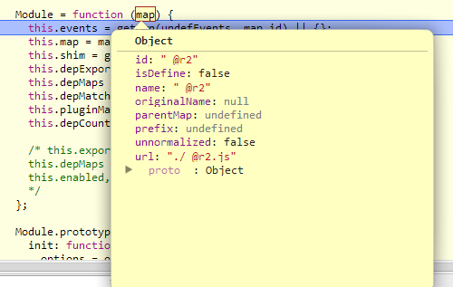

前言
现在工作中基本离不开requireJS这种模块管理工具了，之前一直在用，但是对其原理不甚熟悉，整两天我们来试着学习其源码，而后在探寻其背后的AMD思想吧
于是今天的目标是熟悉requireJS整体框架结构，顺便看看之前的简单demo
程序入口
源码阅读仍然有一定门槛，通看的做法不适合我等素质的选手，所以还是得由入口开始，requireJS的入口便是引入时候指定的data-main
<script src="require.js" type="text/javascript" data-main="main.js"></script>
在js引入后，会自动执行指向data-main的js函数，这个就是我们所谓的入口，跟着这条线，我们就进入了requirejs的大门
首先，引入js文件本身不会干什么事情，那么requirejs内部做了什么呢？
① 除了一些初始化操作以为第一件干的事情，值执行这段代码：
//Create default context. req({});
这段代码会构造默认的参数，其调用的又是整个程序的入口
req = requirejs = function (deps, callback, errback, optional) {}
这里具体干了什么我们先不予关注，继续往后面走，因为貌似，这里与data-main暂时不相干，因为这段会先于data-main逻辑运行
然后，进入data-main相关的逻辑了：
//Look for a data-main script attribute, which could also adjust the baseUrl. if (isBrowser && !cfg.skipDataMain) { //Figure out baseUrl. Get it from the script tag with require.js in it. eachReverse(scripts(), function (script) { //Set the 'head' where we can append children by //using the script's parent. if (!head) { head = script.parentNode; } //Look for a data-main attribute to set main script for the page //to load. If it is there, the path to data main becomes the //baseUrl, if it is not already set. dataMain = script.getAttribute('data-main'); if (dataMain) { //Preserve dataMain in case it is a path (i.e. contains '?') mainScript = dataMain; //Set final baseUrl if there is not already an explicit one. if (!cfg.baseUrl) { //Pull off the directory of data-main for use as the //baseUrl. src = mainScript.split('/'); mainScript = src.pop(); subPath = src.length ? src.join('/') + '/' : './'; cfg.baseUrl = subPath; } //Strip off any trailing .js since mainScript is now //like a module name. mainScript = mainScript.replace(jsSuffixRegExp, ''); //If mainScript is still a path, fall back to dataMain if (req.jsExtRegExp.test(mainScript)) { mainScript = dataMain; } //Put the data-main script in the files to load. cfg.deps = cfg.deps ? cfg.deps.concat(mainScript) : [mainScript]; return true; } }); }
因为requireJS不止用于浏览器，所以这里有一个判断，我们暂时不予关注，看看他干了些什么
① 他会去除页面所有的script标签，然后倒叙遍历之
scripts() => [<script src="require.js" type="text/javascript" data-main="main.js"></script>]
这个地方遇到两个方法
eachReverse
与each一致，只不过由逆序遍历


function eachReverse(ary, func) { if (ary) { var i; for (i = ary.length - 1; i > -1; i -= 1) { if (ary[i] && func(ary[i], i, ary)) { break; } } } }
scripts
便是document.getElementsByTagName('script');返回所有的script标签
然后开始的head便是html中的head标签，暂时不予理睬
if (isBrowser) { head = s.head = document.getElementsByTagName('head')[0]; //If BASE tag is in play, using appendChild is a problem for IE6. //When that browser dies, this can be removed. Details in this jQuery bug: //http://dev.jquery.com/ticket/2709 baseElement = document.getElementsByTagName('base')[0]; if (baseElement) { head = s.head = baseElement.parentNode; } }
dataMain = script.getAttribute('data-main');
然后这一句便可以获取当前指定运行的文件名，比如这里
dataMain => main.js
如果不存在就不会有什么操作了
PS：我原来记得默认指向main.js，看来是我记错了......
然后下来做了一些处理，会根据指定的main.js初步确定bashUrl，其实就是与main.js统一目录
最后做了关键的一个步骤：
cfg.deps = cfg.deps ? cfg.deps.concat(mainScript) : [mainScript];
将main放入带加载的配置中，而本身不干任何事情，继续接下来的逻辑......然后此逻辑暂时结束，根据这些参数进入下一步骤
req/requirejs
根据上一步骤的处理，会形成上面截图的参数，而后再一次执行入口函数req，这个时候就会发生不一样的事情了
/** * Main entry point. * * If the only argument to require is a string, then the module that * is represented by that string is fetched for the appropriate context. * * If the first argument is an array, then it will be treated as an array * of dependency string names to fetch. An optional function callback can * be specified to execute when all of those dependencies are available. * * Make a local req variable to help Caja compliance (it assumes things * on a require that are not standardized), and to give a short * name for minification/local scope use. */ req = requirejs = function (deps, callback, errback, optional) { //Find the right context, use default var context, config, contextName = defContextName; // Determine if have config object in the call. if (!isArray(deps) && typeof deps !== 'string') { // deps is a config object config = deps; if (isArray(callback)) { // Adjust args if there are dependencies deps = callback; callback = errback; errback = optional; } else { deps = []; } } if (config && config.context) { contextName = config.context; } context = getOwn(contexts, contextName); if (!context) { context = contexts[contextName] = req.s.newContext(contextName); } if (config) { context.configure(config); } return context.require(deps, callback, errback); };
这个时候我们的第一个参数deps就不再是undefined了，而是一个对象，这里便将其配置放到了config变量中保持deps为一数组，然后干了些其他事情
这里有个变量context，需要特别注意，后面我们来看看他有些什么，这里有一个新的函数
function getOwn(obj, prop) { return hasProp(obj, prop) && obj[prop]; } function hasProp(obj, prop) { return hasOwn.call(obj, prop); } hasOwn = op.hasOwnProperty
这里会获取非原型属性将其扩展，首次执行时候会碰到一个非常重要的函数newContext 因为他是一个核心，我们这里暂时选择忽略，不然整个全部就陷进去了
经过newContext处理后的context就变成这个样子了：
if (config) { context.configure(config); }
这里就会将我们第一步的参数赋值进对象，具体干了什么，我们依旧不予理睬，main.js干了两件事情：
① 暂时性设置了baseUrl
② 告诉requireJS你马上要加载我了
于是最后终于调用require开始处理逻辑
return context.require(deps, callback, errback);
require
因为context.require = context.makeRequire();而该函数本身又返回localRequire函数，所以事实上这里是执行的localRequire函数，内部维护着一个闭包
因为nextContext只会运行一次，所以很多require实际用到的变量都是nextContext闭包所维护，比如我们这里便可以使用config变量
这里依旧有一些特殊处理，比如deps是字符串的情况，但是我们暂时不予关注.......
PS：搞了这么久很多不予关注了，欠了很多帐啊！
他这里应该是有一个BUG，所以这里用到了一个settimeout延时
PS：因为settimeout的使用，整个这块的程序全部会抛到主干逻辑之后了
然后接下来的步骤比较关键了，我们先抛开一切来理一理这个newContext
newContext
newContext占了源码的主要篇幅，他也只会在初始化时候执行一次，而后便不再执行了：
if (!context) { context = contexts[contextName] = req.s.newContext(contextName); }
现在，我们就目前而知来简单理一理，requireJS的结构
① 变量声明，工具类
在newContext之前，完全是做一些变量的定义，或者做一些简单的操作，里面比较关键的是contexts/cfg对象，会被后面无数次的用到
② 实例化上下文/newContext
紧接着就是newContext这洋洋洒洒一千多行代码了，其中主要干了什么暂时不知道，据我观察应该是做环境相关的准备
③ 对外接口
上面操作结束后便提供了几个主要对外接口
requirejs
require.config
虽然这里是两个函数，其实都是requirejs这一关入口
而后，require自己撸了一把，实例化了默认的参数，这里便调用了newContext，所以以后都不会调用，其中的函数多处于其闭包环境
接下来根据引入script标签的data-main做了一次文章，初始化了简单的参数，并将main.js作为了依赖项，这里会根据main.js重写cfg对象
最后requirejs执行一次reg(cfg)，便真的开始了所有操作，这个时候我们就进入newContext，看看他主要干了什么
PS:所有require并未提供任何借口出来，所以在全局想查看其contexts或者cfg是不行的，而且每次操作都可能导致其改变
要了解newContext函数，还是需要进入其入口
if (!context) { context = contexts[contextName] = req.s.newContext(contextName); }
从script标签引入require库时候，会因为这段代码执行一次newContext函数，从此后，该函数不会被执行，其实现的原因不是我等现在能明白的，先看懂实现再说吧
//Create default context. req({});
所以上面说了那么多，看了这么久，其实最关键的还是首次加载，首次加载就决定了运行上下文了
整体结构
newContext的基本结构大概是这样：
① 函数作用域内变量定义（中间初始化了一发handlers变量）
② 一堆工具函数定义
③ Module模块（这块给人的感觉不明觉厉...应该是核心吧）
④ 实例化context对象，将该对象返回，然后基本结束
进入newContext后，第一步是基本变量定义，这种对外的框架一般都不会到处命名变量，而是将所有变量全部提到函数最前面
一来是js解析时候声明本身会提前，而来可能是到处命名变量会让我们找不到吧......
开始定义了很多变量，我们一来都不知道是干神马的，但是config变量却引起了我们的注意,这里先放出来，继续往下就是一连串的函数了，值得说明的是，这些变量会被重复利用哦
一眼看下来，该函数本身并没有做什么实际的事情，这个时候我们就需要找其入口，这里的入口是
//首次调用 req({}) => //触发newContext，做首次初始化并返回给context对象 context = contexts[contextName] = req.s.newContext(contextName) => //注意这里require函数其实处于了mackRequire函数的闭包环境 context.require = context.makeRequire(); => //首次调用newContext返回对象初始化变量 context.configure(config);
所以，在首次初始化后，并未做特别的处理，直到configure的调用，于是让我们进入该函数
/** * Set a configuration for the context. * @param {Object} cfg config object to integrate. */ configure: function (cfg) { //Make sure the baseUrl ends in a slash. if (cfg.baseUrl) { if (cfg.baseUrl.charAt(cfg.baseUrl.length - 1) !== '/') { cfg.baseUrl += '/'; } } //Save off the paths and packages since they require special processing, //they are additive. var pkgs = config.pkgs, shim = config.shim, objs = { paths: true, config: true, map: true }; eachProp(cfg, function (value, prop) { if (objs[prop]) { if (prop === 'map') { if (!config.map) { config.map = {}; } mixin(config[prop], value, true, true); } else { mixin(config[prop], value, true); } } else { config[prop] = value; } }); //Merge shim if (cfg.shim) { eachProp(cfg.shim, function (value, id) { //Normalize the structure if (isArray(value)) { value = { deps: value }; } if ((value.exports || value.init) && !value.exportsFn) { value.exportsFn = context.makeShimExports(value); } shim[id] = value; }); config.shim = shim; } //Adjust packages if necessary. if (cfg.packages) { each(cfg.packages, function (pkgObj) { var location; pkgObj = typeof pkgObj === 'string' ? { name: pkgObj} : pkgObj; location = pkgObj.location; //Create a brand new object on pkgs, since currentPackages can //be passed in again, and config.pkgs is the internal transformed //state for all package configs. pkgs[pkgObj.name] = { name: pkgObj.name, location: location || pkgObj.name, //Remove leading dot in main, so main paths are normalized, //and remove any trailing .js, since different package //envs have different conventions: some use a module name, //some use a file name. main: (pkgObj.main || 'main') .replace(currDirRegExp, '') .replace(jsSuffixRegExp, '') }; }); //Done with modifications, assing packages back to context config config.pkgs = pkgs; } //If there are any "waiting to execute" modules in the registry, //update the maps for them, since their info, like URLs to load, //may have changed. eachProp(registry, function (mod, id) { //If module already has init called, since it is too //late to modify them, and ignore unnormalized ones //since they are transient. if (!mod.inited && !mod.map.unnormalized) { mod.map = makeModuleMap(id); } }); //If a deps array or a config callback is specified, then call //require with those args. This is useful when require is defined as a //config object before require.js is loaded. if (cfg.deps || cfg.callback) { context.require(cfg.deps || [], cfg.callback); } },
首次传入的是空对象，所以开始一段代码暂时没有意义，这里使用的config变量正是newContext维护的闭包，也就是上面让注意的
config = {
//Defaults. Do not set a default for map
//config to speed up normalize(), which
//will run faster if there is no default.
waitSeconds: 7,
baseUrl: './',
paths: {},
pkgs: {},
shim: {},
config: {}
},
下面用到了一个新的函数：
eachProp
这个函数会遍历对象所有非原型属性，并且使用第二个参数（函数）执行之，如果返回true便停止，首次执行时候cfg为空对象，便没有往下走，否则config变量会被操作，具体我们暂时不管
/** * Cycles over properties in an object and calls a function for each * property value. If the function returns a truthy value, then the * iteration is stopped. */ function eachProp(obj, func) { var prop; for (prop in obj) { if (hasProp(obj, prop)) { if (func(obj[prop], prop)) { break; } } } }
这个所谓的入口执行后实际的意义基本等于什么都没有干......
但是，这里可以得出一个弱弱的结论就是
configure是用于设置参数滴
所以所谓的入口其实没有干事情，这个时候第二个入口便出现了
context.require
return context.require(deps, callback, errback);
参数设置结束后便会执行context的require方法，这个是真正的入口，他实际调用顺序为：
context.require = context.makeRequire(); => localRequire
所以真正调用localRequire时候，已经执行了一番makeRequire函数了，现在处于了其上下文，正因为localRequire被处理过，其多了几个函数属性
除此之外，暂时没有看出其它变化，所以这里在某些特定场景是等价的
function localRequire(deps, callback, errback) { var id, map, requireMod; if (options.enableBuildCallback && callback && isFunction(callback)) { callback.__requireJsBuild = true; } if (typeof deps === 'string') { if (isFunction(callback)) { //Invalid call return onError(makeError('requireargs', 'Invalid require call'), errback); } //If require|exports|module are requested, get the //value for them from the special handlers. Caveat: //this only works while module is being defined. if (relMap && hasProp(handlers, deps)) { return handlers[deps](registry[relMap.id]); } //Synchronous access to one module. If require.get is //available (as in the Node adapter), prefer that. if (req.get) { return req.get(context, deps, relMap, localRequire); } //Normalize module name, if it contains . or .. map = makeModuleMap(deps, relMap, false, true); id = map.id; if (!hasProp(defined, id)) { return onError(makeError('notloaded', 'Module name "' + id + '" has not been loaded yet for context: ' + contextName + (relMap ? '' : '. Use require([])'))); } return defined[id]; } //Grab defines waiting in the global queue. intakeDefines(); //Mark all the dependencies as needing to be loaded. context.nextTick(function () { //Some defines could have been added since the //require call, collect them. intakeDefines(); requireMod = getModule(makeModuleMap(null, relMap)); //Store if map config should be applied to this require //call for dependencies. requireMod.skipMap = options.skipMap; requireMod.init(deps, callback, errback, { enabled: true }); checkLoaded(); }); return localRequire; }
过程中会执行一次intakeDefines，他的意义是定义全局队列，其意义暂时不明，然后进入了前面说的那个settimeout
在主干逻辑结束后，这里会进入时钟队列的回调，其中的代码就比较关键了，只不过首次不能体现
context.nextTick(function () { //Some defines could have been added since the //require call, collect them. intakeDefines(); requireMod = getModule(makeModuleMap(null, relMap)); //Store if map config should be applied to this require //call for dependencies. requireMod.skipMap = options.skipMap; requireMod.init(deps, callback, errback, { enabled: true }); checkLoaded(); });
这段代码事实上是比较奇特的，他会完全脱离整个require代码，比如整个
return context.require(deps, callback, errback);
执行了后上面才会慢慢执行
PS：require这段比较重要，留待明天分析，今天先看整体逻辑
下面的主要逻辑又到了这里
requireMod = getModule(makeModuleMap(null, relMap));
我们这里主要先看getModule先，首先makeModuleMap比较关键，他会根据规则创建一些模块唯一标识的东西，暂时是什么当然是先不管啦......
PS：其规则应该与加载的require数量有关，最后会形成这个东西
/** * Creates a module mapping that includes plugin prefix, module * name, and path. If parentModuleMap is provided it will * also normalize the name via require.normalize() * * @param {String} name the module name * @param {String} [parentModuleMap] parent module map * for the module name, used to resolve relative names. * @param {Boolean} isNormalized: is the ID already normalized. * This is true if this call is done for a define() module ID. * @param {Boolean} applyMap: apply the map config to the ID. * Should only be true if this map is for a dependency. * * @returns {Object} */ function makeModuleMap(name, parentModuleMap, isNormalized, applyMap) { var url, pluginModule, suffix, nameParts, prefix = null, parentName = parentModuleMap ? parentModuleMap.name : null, originalName = name, isDefine = true, normalizedName = ''; //If no name, then it means it is a require call, generate an //internal name. if (!name) { isDefine = false; name = '_@r' + (requireCounter += 1); } nameParts = splitPrefix(name); prefix = nameParts[0]; name = nameParts[1]; if (prefix) { prefix = normalize(prefix, parentName, applyMap); pluginModule = getOwn(defined, prefix); } //Account for relative paths if there is a base name. if (name) { if (prefix) { if (pluginModule && pluginModule.normalize) { //Plugin is loaded, use its normalize method. normalizedName = pluginModule.normalize(name, function (name) { return normalize(name, parentName, applyMap); }); } else { normalizedName = normalize(name, parentName, applyMap); } } else { //A regular module. normalizedName = normalize(name, parentName, applyMap); //Normalized name may be a plugin ID due to map config //application in normalize. The map config values must //already be normalized, so do not need to redo that part. nameParts = splitPrefix(normalizedName); prefix = nameParts[0]; normalizedName = nameParts[1]; isNormalized = true; url = context.nameToUrl(normalizedName); } } //If the id is a plugin id that cannot be determined if it needs //normalization, stamp it with a unique ID so two matching relative //ids that may conflict can be separate. suffix = prefix && !pluginModule && !isNormalized ? '_unnormalized' + (unnormalizedCounter += 1) : ''; return { prefix: prefix, name: normalizedName, parentMap: parentModuleMap, unnormalized: !!suffix, url: url, originalName: originalName, isDefine: isDefine, id: (prefix ? prefix + '!' + normalizedName : normalizedName) + suffix }; }
然后是我们关键的getModule函数
function getModule(depMap) { var id = depMap.id, mod = getOwn(registry, id); if (!mod) { mod = registry[id] = new context.Module(depMap); } return mod; }
可以看到，一旦我们加载了一个模块便不会重新加载了，这是一个很重要的发现哦
registry
该全局变量用于存储加载模块的键值对
第一步当然是加载啦，但是首次应该会跳过，因为当然事实上没有需要加载的模块，一起跟下去吧
Module
然后进入我们关键的Module类模块了
Module = function (map) { this.events = getOwn(undefEvents, map.id) || {}; this.map = map; this.shim = getOwn(config.shim, map.id); this.depExports = []; this.depMaps = []; this.depMatched = []; this.pluginMaps = {}; this.depCount = 0; /* this.exports this.factory this.depMaps = [], this.enabled, this.fetched */ }; Module.prototype = { init: function (depMaps, factory, errback, options) { options = options || {}; //Do not do more inits if already done. Can happen if there //are multiple define calls for the same module. That is not //a normal, common case, but it is also not unexpected. if (this.inited) { return; } this.factory = factory; if (errback) { //Register for errors on this module. this.on('error', errback); } else if (this.events.error) { //If no errback already, but there are error listeners //on this module, set up an errback to pass to the deps. errback = bind(this, function (err) { this.emit('error', err); }); } //Do a copy of the dependency array, so that //source inputs are not modified. For example //"shim" deps are passed in here directly, and //doing a direct modification of the depMaps array //would affect that config. this.depMaps = depMaps && depMaps.slice(0); this.errback = errback; //Indicate this module has be initialized this.inited = true; this.ignore = options.ignore; //Could have option to init this module in enabled mode, //or could have been previously marked as enabled. However, //the dependencies are not known until init is called. So //if enabled previously, now trigger dependencies as enabled. if (options.enabled || this.enabled) { //Enable this module and dependencies. //Will call this.check() this.enable(); } else { this.check(); } }, defineDep: function (i, depExports) { //Because of cycles, defined callback for a given //export can be called more than once. if (!this.depMatched[i]) { this.depMatched[i] = true; this.depCount -= 1; this.depExports[i] = depExports; } }, fetch: function () { if (this.fetched) { return; } this.fetched = true; context.startTime = (new Date()).getTime(); var map = this.map; //If the manager is for a plugin managed resource, //ask the plugin to load it now. if (this.shim) { context.makeRequire(this.map, { enableBuildCallback: true })(this.shim.deps || [], bind(this, function () { return map.prefix ? this.callPlugin() : this.load(); })); } else { //Regular dependency. return map.prefix ? this.callPlugin() : this.load(); } }, load: function () { var url = this.map.url; //Regular dependency. if (!urlFetched[url]) { urlFetched[url] = true; context.load(this.map.id, url); } }, /** * Checks if the module is ready to define itself, and if so, * define it. */ check: function () { if (!this.enabled || this.enabling) { return; } var err, cjsModule, id = this.map.id, depExports = this.depExports, exports = this.exports, factory = this.factory; if (!this.inited) { this.fetch(); } else if (this.error) { this.emit('error', this.error); } else if (!this.defining) { //The factory could trigger another require call //that would result in checking this module to //define itself again. If already in the process //of doing that, skip this work. this.defining = true; if (this.depCount < 1 && !this.defined) { if (isFunction(factory)) { //If there is an error listener, favor passing //to that instead of throwing an error. However, //only do it for define()'d modules. require //errbacks should not be called for failures in //their callbacks (#699). However if a global //onError is set, use that. if ((this.events.error && this.map.isDefine) || req.onError !== defaultOnError) { try { exports = context.execCb(id, factory, depExports, exports); } catch (e) { err = e; } } else { exports = context.execCb(id, factory, depExports, exports); } if (this.map.isDefine) { //If setting exports via 'module' is in play, //favor that over return value and exports. After that, //favor a non-undefined return value over exports use. cjsModule = this.module; if (cjsModule && cjsModule.exports !== undefined && //Make sure it is not already the exports value cjsModule.exports !== this.exports) { exports = cjsModule.exports; } else if (exports === undefined && this.usingExports) { //exports already set the defined value. exports = this.exports; } } if (err) { err.requireMap = this.map; err.requireModules = this.map.isDefine ? [this.map.id] : null; err.requireType = this.map.isDefine ? 'define' : 'require'; return onError((this.error = err)); } } else { //Just a literal value exports = factory; } this.exports = exports; if (this.map.isDefine && !this.ignore) { defined[id] = exports; if (req.onResourceLoad) { req.onResourceLoad(context, this.map, this.depMaps); } } //Clean up cleanRegistry(id); this.defined = true; } //Finished the define stage. Allow calling check again //to allow define notifications below in the case of a //cycle. this.defining = false; if (this.defined && !this.defineEmitted) { this.defineEmitted = true; this.emit('defined', this.exports); this.defineEmitComplete = true; } } }, callPlugin: function () { var map = this.map, id = map.id, //Map already normalized the prefix. pluginMap = makeModuleMap(map.prefix); //Mark this as a dependency for this plugin, so it //can be traced for cycles. this.depMaps.push(pluginMap); on(pluginMap, 'defined', bind(this, function (plugin) { var load, normalizedMap, normalizedMod, name = this.map.name, parentName = this.map.parentMap ? this.map.parentMap.name : null, localRequire = context.makeRequire(map.parentMap, { enableBuildCallback: true }); //If current map is not normalized, wait for that //normalized name to load instead of continuing. if (this.map.unnormalized) { //Normalize the ID if the plugin allows it. if (plugin.normalize) { name = plugin.normalize(name, function (name) { return normalize(name, parentName, true); }) || ''; } //prefix and name should already be normalized, no need //for applying map config again either. normalizedMap = makeModuleMap(map.prefix + '!' + name, this.map.parentMap); on(normalizedMap, 'defined', bind(this, function (value) { this.init([], function () { return value; }, null, { enabled: true, ignore: true }); })); normalizedMod = getOwn(registry, normalizedMap.id); if (normalizedMod) { //Mark this as a dependency for this plugin, so it //can be traced for cycles. this.depMaps.push(normalizedMap); if (this.events.error) { normalizedMod.on('error', bind(this, function (err) { this.emit('error', err); })); } normalizedMod.enable(); } return; } load = bind(this, function (value) { this.init([], function () { return value; }, null, { enabled: true }); }); load.error = bind(this, function (err) { this.inited = true; this.error = err; err.requireModules = [id]; //Remove temp unnormalized modules for this module, //since they will never be resolved otherwise now. eachProp(registry, function (mod) { if (mod.map.id.indexOf(id + '_unnormalized') === 0) { cleanRegistry(mod.map.id); } }); onError(err); }); //Allow plugins to load other code without having to know the //context or how to 'complete' the load. load.fromText = bind(this, function (text, textAlt) { /*jslint evil: true */ var moduleName = map.name, moduleMap = makeModuleMap(moduleName), hasInteractive = useInteractive; //As of 2.1.0, support just passing the text, to reinforce //fromText only being called once per resource. Still //support old style of passing moduleName but discard //that moduleName in favor of the internal ref. if (textAlt) { text = textAlt; } //Turn off interactive script matching for IE for any define //calls in the text, then turn it back on at the end. if (hasInteractive) { useInteractive = false; } //Prime the system by creating a module instance for //it. getModule(moduleMap); //Transfer any config to this other module. if (hasProp(config.config, id)) { config.config[moduleName] = config.config[id]; } try { req.exec(text); } catch (e) { return onError(makeError('fromtexteval', 'fromText eval for ' + id + ' failed: ' + e, e, [id])); } if (hasInteractive) { useInteractive = true; } //Mark this as a dependency for the plugin //resource this.depMaps.push(moduleMap); //Support anonymous modules. context.completeLoad(moduleName); //Bind the value of that module to the value for this //resource ID. localRequire([moduleName], load); }); //Use parentName here since the plugin's name is not reliable, //could be some weird string with no path that actually wants to //reference the parentName's path. plugin.load(map.name, localRequire, load, config); })); context.enable(pluginMap, this); this.pluginMaps[pluginMap.id] = pluginMap; }, enable: function () { enabledRegistry[this.map.id] = this; this.enabled = true; //Set flag mentioning that the module is enabling, //so that immediate calls to the defined callbacks //for dependencies do not trigger inadvertent load //with the depCount still being zero. this.enabling = true; //Enable each dependency each(this.depMaps, bind(this, function (depMap, i) { var id, mod, handler; if (typeof depMap === 'string') { //Dependency needs to be converted to a depMap //and wired up to this module. depMap = makeModuleMap(depMap, (this.map.isDefine ? this.map : this.map.parentMap), false, !this.skipMap); this.depMaps[i] = depMap; handler = getOwn(handlers, depMap.id); if (handler) { this.depExports[i] = handler(this); return; } this.depCount += 1; on(depMap, 'defined', bind(this, function (depExports) { this.defineDep(i, depExports); this.check(); })); if (this.errback) { on(depMap, 'error', bind(this, this.errback)); } } id = depMap.id; mod = registry[id]; //Skip special modules like 'require', 'exports', 'module' //Also, don't call enable if it is already enabled, //important in circular dependency cases. if (!hasProp(handlers, id) && mod && !mod.enabled) { context.enable(depMap, this); } })); //Enable each plugin that is used in //a dependency eachProp(this.pluginMaps, bind(this, function (pluginMap) { var mod = getOwn(registry, pluginMap.id); if (mod && !mod.enabled) { context.enable(pluginMap, this); } })); this.enabling = false; this.check(); }, on: function (name, cb) { var cbs = this.events[name]; if (!cbs) { cbs = this.events[name] = []; } cbs.push(cb); }, emit: function (name, evt) { each(this.events[name], function (cb) { cb(evt); }); if (name === 'error') { //Now that the error handler was triggered, remove //the listeners, since this broken Module instance //can stay around for a while in the registry. delete this.events[name]; } } };
总的来说，这个模块还是很长的，首先是其构造函数

这里仍有很多东西读不懂，所以就全部过吧，反正今天的主要目的是熟悉整体框架
这里实例化结束后便形成了一个模块暂存于requireMod变量中，函数执行结束后变量会销毁，该模块会存与全局registery对象中
这里会执行其init方法干具体业务的事情
requireMod.init(deps, callback, errback, { enabled: true });
这里又会执行
this.enable();
enable: function () { enabledRegistry[this.map.id] = this; this.enabled = true; //Set flag mentioning that the module is enabling, //so that immediate calls to the defined callbacks //for dependencies do not trigger inadvertent load //with the depCount still being zero. this.enabling = true; //Enable each dependency each(this.depMaps, bind(this, function (depMap, i) { var id, mod, handler; if (typeof depMap === 'string') { //Dependency needs to be converted to a depMap //and wired up to this module. depMap = makeModuleMap(depMap, (this.map.isDefine ? this.map : this.map.parentMap), false, !this.skipMap); this.depMaps[i] = depMap; handler = getOwn(handlers, depMap.id); if (handler) { this.depExports[i] = handler(this); return; } this.depCount += 1; on(depMap, 'defined', bind(this, function (depExports) { this.defineDep(i, depExports); this.check(); })); if (this.errback) { on(depMap, 'error', bind(this, this.errback)); } } id = depMap.id; mod = registry[id]; //Skip special modules like 'require', 'exports', 'module' //Also, don't call enable if it is already enabled, //important in circular dependency cases. if (!hasProp(handlers, id) && mod && !mod.enabled) { context.enable(depMap, this); } })); //Enable each plugin that is used in //a dependency eachProp(this.pluginMaps, bind(this, function (pluginMap) { var mod = getOwn(registry, pluginMap.id); if (mod && !mod.enabled) { context.enable(pluginMap, this); } })); this.enabling = false; this.check(); },
然后又会调用 this.check();这个家伙操作结束后接下来checkLoaded就会创建script标签了......
/** * Checks if the module is ready to define itself, and if so, * define it. */ check: function () { if (!this.enabled || this.enabling) { return; } var err, cjsModule, id = this.map.id, depExports = this.depExports, exports = this.exports, factory = this.factory; if (!this.inited) { this.fetch(); } else if (this.error) { this.emit('error', this.error); } else if (!this.defining) { //The factory could trigger another require call //that would result in checking this module to //define itself again. If already in the process //of doing that, skip this work. this.defining = true; if (this.depCount < 1 && !this.defined) { if (isFunction(factory)) { //If there is an error listener, favor passing //to that instead of throwing an error. However, //only do it for define()'d modules. require //errbacks should not be called for failures in //their callbacks (#699). However if a global //onError is set, use that. if ((this.events.error && this.map.isDefine) || req.onError !== defaultOnError) { try { exports = context.execCb(id, factory, depExports, exports); } catch (e) { err = e; } } else { exports = context.execCb(id, factory, depExports, exports); } if (this.map.isDefine) { //If setting exports via 'module' is in play, //favor that over return value and exports. After that, //favor a non-undefined return value over exports use. cjsModule = this.module; if (cjsModule && cjsModule.exports !== undefined && //Make sure it is not already the exports value cjsModule.exports !== this.exports) { exports = cjsModule.exports; } else if (exports === undefined && this.usingExports) { //exports already set the defined value. exports = this.exports; } } if (err) { err.requireMap = this.map; err.requireModules = this.map.isDefine ? [this.map.id] : null; err.requireType = this.map.isDefine ? 'define' : 'require'; return onError((this.error = err)); } } else { //Just a literal value exports = factory; } this.exports = exports; if (this.map.isDefine && !this.ignore) { defined[id] = exports; if (req.onResourceLoad) { req.onResourceLoad(context, this.map, this.depMaps); } } //Clean up cleanRegistry(id); this.defined = true; } //Finished the define stage. Allow calling check again //to allow define notifications below in the case of a //cycle. this.defining = false; if (this.defined && !this.defineEmitted) { this.defineEmitted = true; this.emit('defined', this.exports); this.defineEmitComplete = true; } } },
然后今天累了，明天继续吧......
结语
今天的目标是熟悉requireJS的整体结构，如果没有错觉或者解读失误，我们应该大概了解了requireJS的整体结构，于是让我们明天继续吧
PS：尼玛这个框架还真是有点难，小钗感觉有点小吃力啊，估计要读到下周才能真正理解一点的了........